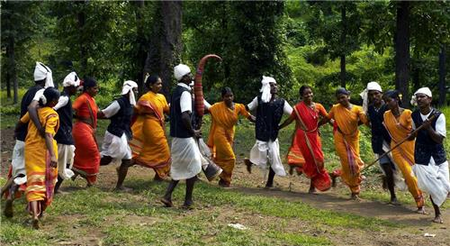
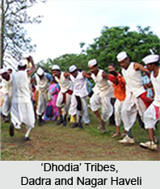

Dadra and Nagar Haveli, a Union Territory in India, has a unique and vibrant culture influenced by its tribal heritage, Portuguese history, and natural surroundings. The territory is home to various tribal communities, each contributing to its rich cultural landscape. Here’s an overview of the culture in Dadra and Nagar Haveli:
1. Tribal Heritage
- Diverse Tribes: The population of Dadra and Nagar Haveli consists primarily of tribal communities, including the Warlis, Dublas, Koknas, and Dhodiya tribes. These communities retain distinct cultural practices, traditions, and art forms.
- Beliefs and Practices: The tribal people maintain a close relationship with nature, which is evident in their customs, folklore, and religious beliefs. Many worship natural elements, like trees and rivers, and revere a range of deities for protection and prosperity.
2. Festivals
- Bhagoria Festival: Celebrated by the Warli and Kokna tribes, Bhagoria is a harvest festival marked by colorful gatherings, singing, dancing, and cultural performances. It symbolizes the joy of harvest and the union of young couples, as it is also a time when couples traditionally choose their life partners.
- Diwali and Holi: Alongside traditional festivals, Dadra and Nagar Haveli also celebrate popular Indian festivals like Diwali and Holi, with enthusiasm, bringing together people from all communities.
- Kaleidoscope Festival: The administration organizes the Kaleidoscope Festival to showcase and promote the local art, dance, music, and crafts of the region, drawing in visitors and highlighting the unique cultural heritage of the Union Territory.
3. Traditional Dance and Music
- Tarpa Dance: This iconic dance is performed by the Warli tribe during the harvest season. Men and women dance to the beats of the "Tarpa" – a wind instrument made from dried gourd or wood, symbolizing community harmony.
- Other Dance Forms: Dances like Dhol Dance and Bhavada Dance are also performed by tribal communities on special occasions and festivals, accompanied by traditional folk songs and drumbeats.
4. Art and Craft
- Warli Art: Famous for its simplicity and symbolic representation, Warli art uses white paint on mud walls to depict scenes from daily life, animals, nature, and religious motifs. These paintings are created during weddings, festivals, and rituals, embodying the beliefs and lifestyle of the Warli community.
- Bamboo Craft: Bamboo craft is another specialty in Dadra and Nagar Haveli, where locals create baskets, mats, and decorative items from bamboo, displaying intricate designs and craftsmanship.


5. Cuisine
- Staple Foods: The local diet primarily includes rice, pulses, vegetables, and meat. Tribal people gather food from forests, so dishes often include wild herbs, bamboo shoots, and forest fruits.
- Traditional Dishes: Popular traditional dishes include ubadiyu (a seasonal vegetable dish), fish curry, and spicy preparations of wild game meat.
- Festive Foods: During festivals, the locals prepare special sweets and savories made from ingredients like rice flour, jaggery, and coconut.
6. Language and Clothing
- Language: Gujarati and Hindi are widely spoken and serve as the primary languages of communication. The tribal communities have their own dialects, which reflect their heritage and are passed down through generations.
- Traditional Attire: Men wear dhotis, waistcoats, and turbans, while women traditionally wear sarees in bright colors. Tribal jewelry, including bead necklaces, bangles, and nose rings, is also popular among the women.
7. Social Structure and Community Life
- Community Gatherings: Tribal communities have a strong sense of unity, with gatherings and collective activities forming an integral part of their social life. This is particularly evident during festivals and rituals, where the entire community participates.
- Rituals and Customs: Rituals are an essential part of life, with communities performing specific rites for weddings, harvests, and religious ceremonies. These rituals are usually accompanied by song, dance, and offerings to local deities.
Conclusion
The culture of Dadra and Nagar Haveli is a blend of tribal customs, nature worship, vibrant festivals, traditional arts, and folk performances. Deeply rooted in their connection to nature, the people of this region celebrate their heritage through dance, music, art, and rituals. The cultural diversity and traditions of Dadra and Nagar Haveli make it a unique and colorful part of India’s cultural landscape.